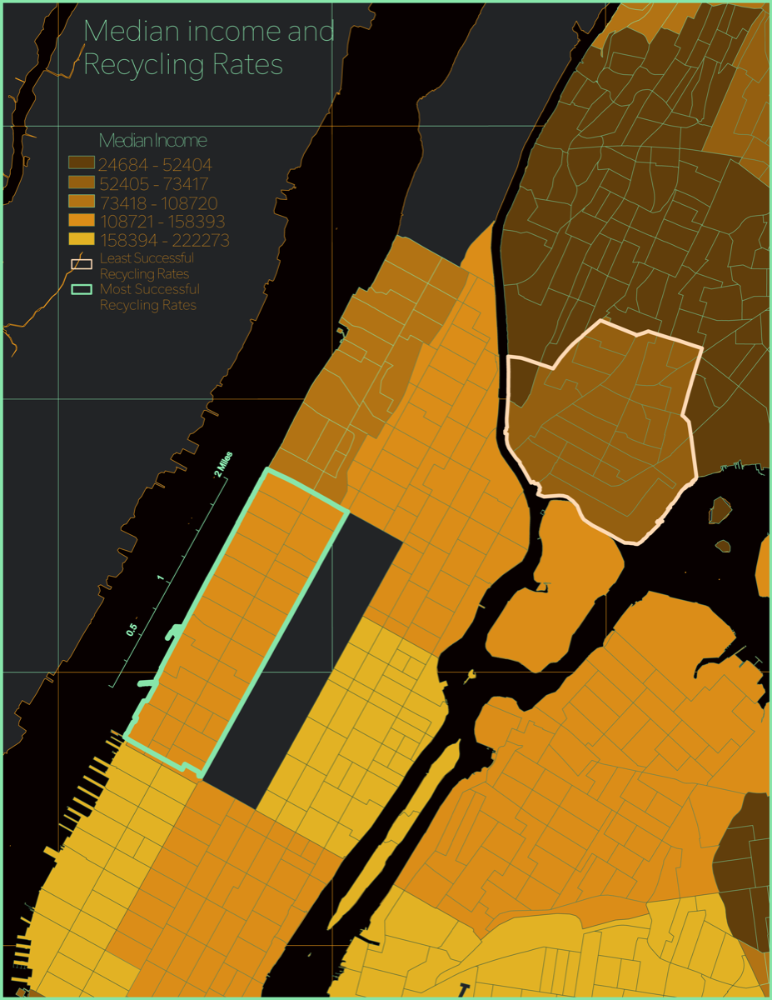
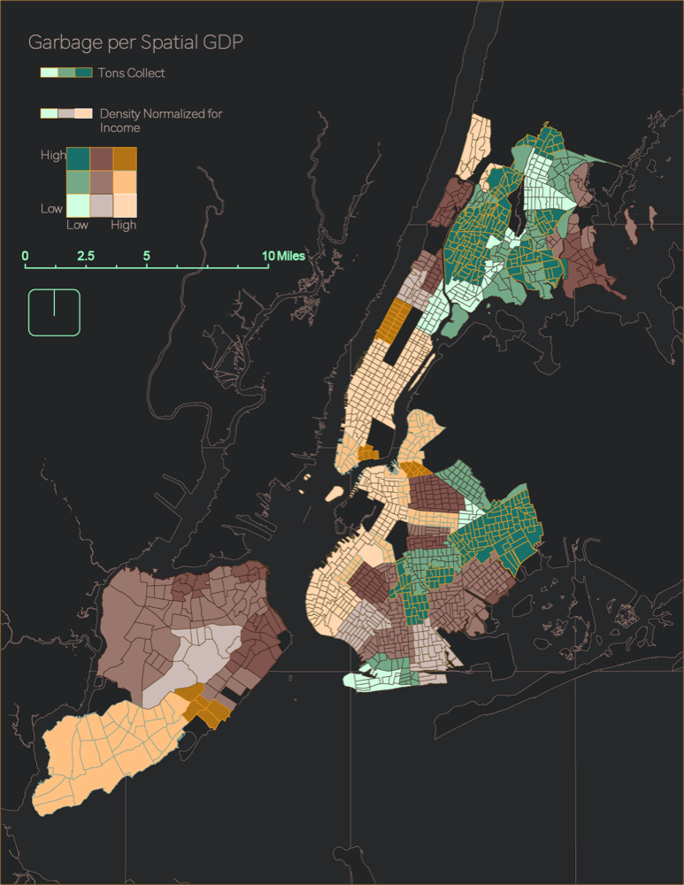
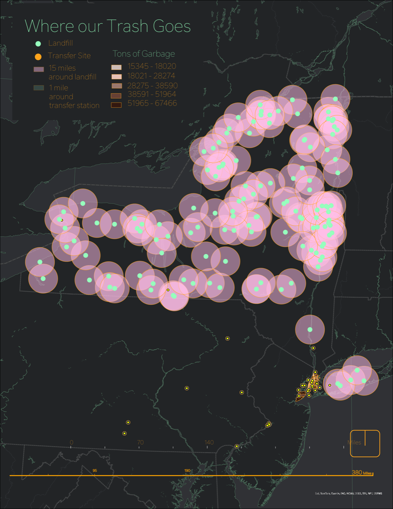

Maps are arguments. Every projection, color ramp, and boundary line encodes a point of view. I use GIS, interactive visualization, and spatial statistics to make invisible geographies legible — and to advocate for the communities those geographies shape.
Where should transit go next? This analysis identifies where demand is being suppressed by poor access across 2,181 NJ census tracts and shows how targeted bus and rail investments would change ridership — using spatial analysis, OLS regression, and Random Forest modeling. The full project site is embedded below.
When NYC introduced congestion pricing in Manhattan's Central Business District, where did displaced taxi traffic go? This scrollytelling analysis uses spatial statistics — Moran's I, LISA clustering, and distance-band analysis — to trace how congestion didn't disappear but migrated to surrounding neighborhoods, with measurable impacts on bridge crossings, outer-borough streets, and environmental justice communities.

This project analyzed NYC Department of Sanitation data to evaluate the city's Zero Waste Plan. Using spatial analysis and density mapping, I traced where NYC's trash actually goes — mapping landfill catchment areas, transfer station networks, and the spatial relationships between waste generation, recycling infrastructure, and income.
The analysis revealed how recycling infrastructure gaps and declining material recovery rates disproportionately affect low-income neighborhoods — turning waste data into an equity argument.

A bivariate choropleth mapping tons of refuse collected against density-normalized income. Low-income, high-waste neighborhoods cluster in the Bronx and northern Brooklyn — the spatial signature of environmental inequity.

NYC's waste travels hundreds of miles to landfills across the northeast. Transfer station catchment areas reveal how waste infrastructure concentrates environmental burden in specific communities.
Spatial data feeds into predictive models, grounds policy arguments, and draws on embodied sensing data.